柱坐标系和球坐标系
柱坐标系 | Cylindrical Coordinates
对于一个三重积分 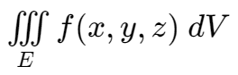，我们可以将其转化为柱坐标系：
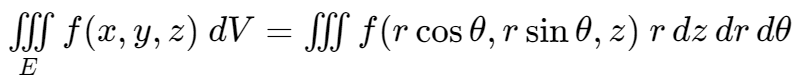
球坐标系 | Spherical Coodinates
对于球坐标系 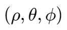，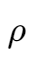 为点到原点的距离，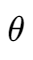 与极坐标系相同，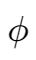 为点到原点连线与 z 轴的夹角。

转换关系：
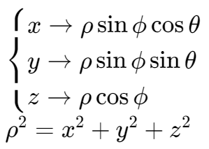
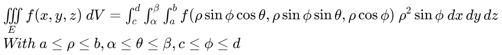
对于一个三重积分 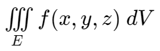，我们可以将其转化为柱坐标系：
对于球坐标系 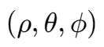，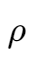 为点到原点的距离，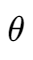 与极坐标系相同，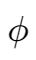 为点到原点连线与 z 轴的夹角。
转换关系：